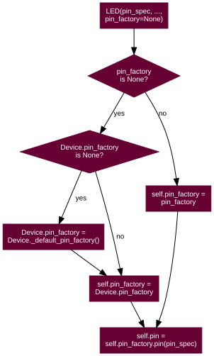

24. API - Pins
As of release 1.1, the GPIO Zero library can be roughly divided into two things: pins and the devices that are connected to them. The majority of the documentation focuses on devices as pins are below the level that most users are concerned with. However, some users may wish to take advantage of the capabilities of alternative GPIO implementations or (in future) use GPIO extender chips. This is the purpose of the pins portion of the library.
When you construct a device, you pass in a pin specification. This is passed to
a pin Factory which turns it into a Pin implementation. The
default factory can be queried (and changed) with Device.pin_factory.
However, all classes (even internal devices) accept a pin_factory keyword
argument to their constructors permitting the factory to be overridden on a
per-device basis (the reason for allowing per-device factories is made apparent
in the Configuring Remote GPIO chapter).
This is illustrated in the following flow-chart:

The default factory is constructed when the first device is initialised; if no
default factory can be constructed (e.g. because no GPIO implementations are
installed, or all of them fail to load for whatever reason), a
BadPinFactory exception will be raised at construction time.
After importing gpiozero, until constructing a gpiozero device, the pin factory
is None, but at the point of first construction the default pin factory
will come into effect:
pi@raspberrypi:~ $ python3
Python 3.7.3 (default, Apr 3 2019, 05:39:12)
[GCC 8.2.0] on linux
Type "help", "copyright", "credits" or "license" for more information.
>>> from gpiozero import Device, LED
>>> print(Device.pin_factory)
None
>>> led = LED(2)
>>> Device.pin_factory
<gpiozero.pins.rpigpio.RPiGPIOFactory object at 0xb667ae30>
>>> led.pin_factory
<gpiozero.pins.rpigpio.RPiGPIOFactory object at 0xb6323530>
As above, on a Raspberry Pi with the RPi.GPIO library installed, (assuming no
environment variables are set), the default pin factory will be
RPiGPIOFactory.
On a PC (with no pin libraries installed and no environment variables set),
importing will work but attempting to create a device will raise
BadPinFactory:
ben@magicman:~ $ python3
Python 3.6.8 (default, Aug 20 2019, 17:12:48)
[GCC 8.3.0] on linux
Type "help", "copyright", "credits" or "license" for more information.
>>> from gpiozero import Device, LED
>>> print(Device.pin_factory)
None
>>> led = LED(2)
...
BadPinFactory: Unable to load any default pin factory!
24.1. Changing the pin factory
The default pin factory can be replaced by specifying a value for the
GPIOZERO_PIN_FACTORY environment variable. For example:
pi@raspberrypi:~ $ GPIOZERO_PIN_FACTORY=native python3
Python 3.7.3 (default, Apr 3 2019, 05:39:12)
[GCC 8.2.0] on linux
Type "help", "copyright", "credits" or "license" for more information.
>>> from gpiozero import Device
>>> Device._default_pin_factory()
<gpiozero.pins.native.NativeFactory object at 0x762c26b0>
To set the GPIOZERO_PIN_FACTORY for the rest of your session you can
export this value:
pi@raspberrypi:~ $ export GPIOZERO_PIN_FACTORY=native
pi@raspberrypi:~ $ python3
Python 3.7.3 (default, Apr 3 2019, 05:39:12)
[GCC 8.2.0] on linux
Type "help", "copyright", "credits" or "license" for more information.
>>> import gpiozero
>>> Device._default_pin_factory()
<gpiozero.pins.native.NativeFactory object at 0x762c26b0>
>>> quit()
pi@raspberrypi:~ $ python3
Python 3.7.3 (default, Apr 3 2019, 05:39:12)
[GCC 8.2.0] on linux
Type "help", "copyright", "credits" or "license" for more information.
>>> import gpiozero
>>> Device._default_pin_factory()
<gpiozero.pins.native.NativeFactory object at 0x762c26b0>
If you add the export command to your ~/.bashrc file, you’ll
set the default pin factory for all future sessions too.
If the environment variable is set, the corresponding pin factory will be used, otherwise each of the four GPIO pin factories will be attempted to be used in turn.
The following values, and the corresponding Factory and Pin
classes are listed in the table below. Factories are listed in the order that
they are tried by default.
Name |
Factory class |
Pin class |
|---|---|---|
rpigpio |
||
lgpio |
||
pigpio |
||
native |
If you need to change the default pin factory from within a script, either set
Device.pin_factory to the new factory instance to use:
from gpiozero.pins.native import NativeFactory
from gpiozero import Device, LED
Device.pin_factory = NativeFactory()
# These will now implicitly use NativePin instead of RPiGPIOPin
led1 = LED(16)
led2 = LED(17)
Or use the pin_factory keyword parameter mentioned above:
from gpiozero.pins.native import NativeFactory
from gpiozero import LED
my_factory = NativeFactory()
# This will use NativePin instead of RPiGPIOPin for led1
# but led2 will continue to use RPiGPIOPin
led1 = LED(16, pin_factory=my_factory)
led2 = LED(17)
Certain factories may take default information from additional sources.
For example, to default to creating pins with
gpiozero.pins.pigpio.PiGPIOPin on a remote pi called “remote-pi”
you can set the PIGPIO_ADDR environment variable when running your
script:
$ GPIOZERO_PIN_FACTORY=pigpio PIGPIO_ADDR=remote-pi python3 my_script.py
Like the GPIOZERO_PIN_FACTORY value, these can be exported from your
~/.bashrc script too.
Warning
The astute and mischievous reader may note that it is possible to mix
factories, e.g. using RPiGPIOFactory for
one pin, and NativeFactory for another. This
is unsupported, and if it results in your script crashing, your components
failing, or your Raspberry Pi turning into an actual raspberry pie, you
have only yourself to blame.
Sensible uses of multiple pin factories are given in Configuring Remote GPIO.
24.2. Mock pins
There’s also a MockFactory which generates entirely
fake pins. This was originally intended for GPIO Zero developers who wish to
write tests for devices without having to have the physical device wired in to
their Pi. However, they have also proven useful in developing GPIO Zero scripts
without having a Pi to hand. This pin factory will never be loaded by default;
it must be explicitly specified, either by setting an environment variable or
setting the pin factory within the script. For example:
pi@raspberrypi:~ $ GPIOZERO_PIN_FACTORY=mock python3
or:
from gpiozero import Device, LED
from gpiozero.pins.mock import MockFactory
Device.pin_factory = MockFactory()
led = LED(2)
You can create device objects and inspect their value changing as you’d expect:
pi@raspberrypi:~ $ GPIOZERO_PIN_FACTORY=mock python3
Python 3.7.3 (default, Apr 3 2019, 05:39:12)
[GCC 8.2.0] on linux
Type "help", "copyright", "credits" or "license" for more information.
>>> from gpiozero import LED
>>> led = LED(2)
>>> led.value
0
>>> led.on()
>>> led.value
1
You can even control pin state changes to simulate device behaviour:
>>> from gpiozero import LED, Button
# Construct a couple of devices attached to mock pins 16 and 17, and link the devices
>>> led = LED(17)
>>> btn = Button(16)
>>> led.source = btn
# Initailly the button isn't "pressed" so the LED should be off
>>> led.value
0
# Drive the pin low (this is what would happen electrically when the button is pressed)
>>> btn.pin.drive_low()
# The LED is now on
>>> led.value
1
>>> btn.pin.drive_high()
# The button is now "released", so the LED should be off again
>>> led.value
0
Several sub-classes of mock pins exist for emulating various other things
(pins that do/don’t support PWM, pins that are connected together, pins that
drive high after a delay, etc), for example, you have to use
MockPWMPin to be able to use devices requiring PWM:
pi@raspberrypi:~ $ GPIOZERO_PIN_FACTORY=mock GPIOZERO_MOCK_PIN_CLASS=mockpwmpin python3
or:
from gpiozero import Device, LED
from gpiozero.pins.mock import MockFactory, MockPWMPin
Device.pin_factory = MockFactory(pin_class=MockPWMPin)
led = LED(2)
Interested users are invited to read the GPIO Zero test suite for further examples of usage.
24.3. Base classes
- class gpiozero.Factory[source]
Generates pins and SPI interfaces for devices. This is an abstract base class for pin factories. Descendents must override the following methods:
_get_board_info()
Descendents may override the following methods, if applicable:
- close()[source]
Closes the pin factory. This is expected to clean up all resources manipulated by the factory. It it typically called at script termination.
- pin(name)[source]
Creates an instance of a
Pindescendent representing the specified pin.Warning
Descendents must ensure that pin instances representing the same hardware are identical; i.e. two separate invocations of
pin()for the same pin specification must return the same object.
- release_all(reserver)[source]
Releases all pin reservations taken out by reserver. See
release_pins()for further information).
- release_pins(reserver, *names)[source]
Releases the reservation of reserver against pin names. This is typically called during
close()to clean up reservations taken during construction. Releasing a reservation that is not currently held will be silently ignored (to permit clean-up after failed / partial construction).
- reserve_pins(requester, *names)[source]
Called to indicate that the device reserves the right to use the specified pin names. This should be done during device construction. If pins are reserved, you must ensure that the reservation is released by eventually called
release_pins().
- spi(**spi_args)[source]
Returns an instance of an
SPIinterface, for the specified SPI port and device, or for the specified pins (clock_pin, mosi_pin, miso_pin, and select_pin). Only one of the schemes can be used; attempting to mix port and device with pin numbers will raiseSPIBadArgs.
- ticks()[source]
Return the current ticks, according to the factory. The reference point is undefined and thus the result of this method is only meaningful when compared to another value returned by this method.
The format of the time is also arbitrary, as is whether the time wraps after a certain duration. Ticks should only be compared using the
ticks_diff()method.
- ticks_diff(later, earlier)[source]
Return the time in seconds between two
ticks()results. The arguments are specified in the same order as they would be in the formula later - earlier but the result is guaranteed to be in seconds, and to be positive even if the ticks “wrapped” between calls toticks().
- property board_info
Returns a
BoardInfoinstance (or derivative) representing the board that instances generated by this factory will be attached to.
- class gpiozero.Pin[source]
Abstract base class representing a pin attached to some form of controller, be it GPIO, SPI, ADC, etc.
Descendents should override property getters and setters to accurately represent the capabilities of pins. Descendents must override the following methods:
_get_info()_get_function()_set_function()_get_state()
Descendents may additionally override the following methods, if applicable:
_set_state()_get_frequency()_set_frequency()_get_pull()_set_pull()_get_bounce()_set_bounce()_get_edges()_set_edges()_get_when_changed()_set_when_changed()
- close()[source]
Cleans up the resources allocated to the pin. After this method is called, this
Pininstance may no longer be used to query or control the pin’s state.
- input_with_pull(pull)[source]
Sets the pin’s function to “input” and specifies an initial pull-up for the pin. By default this is equivalent to performing:
pin.function = 'input' pin.pull = pull
However, descendents may override this order to provide the smallest possible delay between configuring the pin for input and pulling the pin up/down (which can be important for avoiding “blips” in some configurations).
- output_with_state(state)[source]
Sets the pin’s function to “output” and specifies an initial state for the pin. By default this is equivalent to performing:
pin.function = 'output' pin.state = state
However, descendents may override this in order to provide the smallest possible delay between configuring the pin for output and specifying an initial value (which can be important for avoiding “blips” in active-low configurations).
- property bounce
The amount of bounce detection (elimination) currently in use by edge detection, measured in seconds. If bounce detection is not currently in use, this is
None.For example, if
edgesis currently “rising”,bounceis currently 5/1000 (5ms), then the waveform below will only firewhen_changedon two occasions despite there being three rising edges:TIME 0...1...2...3...4...5...6...7...8...9...10..11..12 ms bounce elimination |===================| |============== HIGH - - - - > ,--. ,--------------. ,--. | | | | | | | | | | | | LOW ----------------' `-' `-' `----------- : : : : when_changed when_changed fires firesIf the pin does not support edge detection, attempts to set this property will raise
PinEdgeDetectUnsupported. If the pin supports edge detection, the class must implement bounce detection, even if only in software.
- property edges
The edge that will trigger execution of the function or bound method assigned to
when_changed. This can be one of the strings “both” (the default), “rising”, “falling”, or “none”:HIGH - - - - > ,--------------. | | | | LOW --------------------' `-------------- : : : : Fires when_changed "both" "both" when edges is ... "rising" "falling"If the pin does not support edge detection, attempts to set this property will raise
PinEdgeDetectUnsupported.
- property frequency
The frequency (in Hz) for the pin’s PWM implementation, or
Noneif PWM is not currently in use. This value always defaults toNoneand may be changed with certain pin types to activate or deactivate PWM.If the pin does not support PWM,
PinPWMUnsupportedwill be raised when attempting to set this to a value other thanNone.
- property function
The function of the pin. This property is a string indicating the current function or purpose of the pin. Typically this is the string “input” or “output”. However, in some circumstances it can be other strings indicating non-GPIO related functionality.
With certain pin types (e.g. GPIO pins), this attribute can be changed to configure the function of a pin. If an invalid function is specified, for this attribute,
PinInvalidFunctionwill be raised.
- property info
Returns the
PinInfoassociated with the pin. This can be used to determine physical properties of the pin, including its location on the header, fixed pulls, and the various specs that can be used to identify it.
- property pull
The pull-up state of the pin represented as a string. This is typically one of the strings “up”, “down”, or “floating” but additional values may be supported by the underlying hardware.
If the pin does not support changing pull-up state (for example because of a fixed pull-up resistor), attempts to set this property will raise
PinFixedPull. If the specified value is not supported by the underlying hardware,PinInvalidPullis raised.
- property state
The state of the pin. This is 0 for low, and 1 for high. As a low level view of the pin, no swapping is performed in the case of pull ups (see
pullfor more information):HIGH - - - - > ,---------------------- | | LOW ----------------'Descendents which implement analog, or analog-like capabilities can return values between 0 and 1. For example, pins implementing PWM (where
frequencyis notNone) return a value between 0.0 and 1.0 representing the current PWM duty cycle.If a pin is currently configured for input, and an attempt is made to set this attribute,
PinSetInputwill be raised. If an invalid value is specified for this attribute,PinInvalidStatewill be raised.
- property when_changed
A function or bound method to be called when the pin’s state changes (more specifically when the edge specified by
edgesis detected on the pin). The function or bound method must accept two parameters: the first will report the ticks (fromFactory.ticks()) when the pin’s state changed, and the second will report the pin’s current state.Warning
Depending on hardware support, the state is not guaranteed to be accurate. For instance, many GPIO implementations will provide an interrupt indicating when a pin’s state changed but not what it changed to. In this case the pin driver simply reads the pin’s current state to supply this parameter, but the pin’s state may have changed since the interrupt. Exercise appropriate caution when relying upon this parameter.
If the pin does not support edge detection, attempts to set this property will raise
PinEdgeDetectUnsupported.
- class gpiozero.SPI(*args, **kwargs)[source]
Abstract interface for Serial Peripheral Interface (SPI) implementations. Descendents must override the following methods:
_get_clock_mode()
Descendents may override the following methods, if applicable:
_set_clock_mode()_get_lsb_first()_set_lsb_first()_get_select_high()_set_select_high()_get_bits_per_word()_set_bits_per_word()
- read(n)[source]
Read n words of data from the SPI interface, returning them as a sequence of unsigned ints, each no larger than the configured
bits_per_wordof the interface.This method is typically used with read-only devices that feature half-duplex communication. See
transfer()for full duplex communication.
- transfer(data)[source]
Write data to the SPI interface. data must be a sequence of unsigned integer words each of which will fit within the configured
bits_per_wordof the interface. The method returns the sequence of words read from the interface while writing occurred (full duplex communication).The length of the sequence returned dictates the number of words of data written to the interface. Each word in the returned sequence will be an unsigned integer no larger than the configured
bits_per_wordof the interface.
- write(data)[source]
Write data to the SPI interface. data must be a sequence of unsigned integer words each of which will fit within the configured
bits_per_wordof the interface. The method returns the number of words written to the interface (which may be less than or equal to the length of data).This method is typically used with write-only devices that feature half-duplex communication. See
transfer()for full duplex communication.
- property bits_per_word
Controls the number of bits that make up a word, and thus where the word boundaries appear in the data stream, and the maximum value of a word. Defaults to 8 meaning that words are effectively bytes.
Several implementations do not support non-byte-sized words.
- property clock_mode
Presents a value representing the
clock_polarityandclock_phaseattributes combined according to the following table:mode
polarity (CPOL)
phase (CPHA)
0
False
False
1
False
True
2
True
False
3
True
True
Adjusting this value adjusts both the
clock_polarityandclock_phaseattributes simultaneously.
- property clock_phase
The phase of the SPI clock pin. If this is
False(the default), data will be read from the MISO pin when the clock pin activates. Setting this toTruewill cause data to be read from the MISO pin when the clock pin deactivates. On many data sheets this is documented as the CPHA value. Whether the clock edge is rising or falling when the clock is considered activated is controlled by theclock_polarityattribute (corresponding to CPOL).The following diagram indicates when data is read when
clock_polarityisFalse, andclock_phaseisFalse(the default), equivalent to CPHA 0:,---. ,---. ,---. ,---. ,---. ,---. ,---. CLK | | | | | | | | | | | | | | | | | | | | | | | | | | | | ----' `---' `---' `---' `---' `---' `---' `------- : : : : : : : MISO---. ,---. ,---. ,---. ,---. ,---. ,---. / \ / \ / \ / \ / \ / \ / \ -{ Bit X Bit X Bit X Bit X Bit X Bit X Bit }------ \ / \ / \ / \ / \ / \ / \ / `---' `---' `---' `---' `---' `---' `---'The following diagram indicates when data is read when
clock_polarityisFalse, butclock_phaseisTrue, equivalent to CPHA 1:,---. ,---. ,---. ,---. ,---. ,---. ,---. CLK | | | | | | | | | | | | | | | | | | | | | | | | | | | | ----' `---' `---' `---' `---' `---' `---' `------- : : : : : : : MISO ,---. ,---. ,---. ,---. ,---. ,---. ,---. / \ / \ / \ / \ / \ / \ / \ -----{ Bit X Bit X Bit X Bit X Bit X Bit X Bit }-- \ / \ / \ / \ / \ / \ / \ / `---' `---' `---' `---' `---' `---' `---'
- property clock_polarity
The polarity of the SPI clock pin. If this is
False(the default), the clock pin will idle low, and pulse high. Setting this toTruewill cause the clock pin to idle high, and pulse low. On many data sheets this is documented as the CPOL value.The following diagram illustrates the waveform when
clock_polarityisFalse(the default), equivalent to CPOL 0:on on on on on on on ,---. ,---. ,---. ,---. ,---. ,---. ,---. CLK | | | | | | | | | | | | | | | | | | | | | | | | | | | | ------' `---' `---' `---' `---' `---' `---' `------ idle off off off off off off idleThe following diagram illustrates the waveform when
clock_polarityisTrue, equivalent to CPOL 1:idle off off off off off off idle ------. ,---. ,---. ,---. ,---. ,---. ,---. ,------ | | | | | | | | | | | | | | CLK | | | | | | | | | | | | | | `---' `---' `---' `---' `---' `---' `---' on on on on on on on
- property lsb_first
Controls whether words are read and written LSB in (Least Significant Bit first) order. The default is
Falseindicating that words are read and written in MSB (Most Significant Bit first) order. Effectively, this controls the Bit endianness of the connection.The following diagram shows the a word containing the number 5 (binary 0101) transmitted on MISO with
bits_per_wordset to 4, andclock_modeset to 0, whenlsb_firstisFalse(the default):,---. ,---. ,---. ,---. CLK | | | | | | | | | | | | | | | | ----' `---' `---' `---' `----- : ,-------. : ,-------. MISO: | : | : | : | : | : | : | : | ----------' : `-------' : `---- : : : : MSB LSBAnd now with
lsb_firstset toTrue(and all other parameters the same):,---. ,---. ,---. ,---. CLK | | | | | | | | | | | | | | | | ----' `---' `---' `---' `----- ,-------. : ,-------. : MISO: | : | : | : | : | : | : | : --' : `-------' : `----------- : : : : LSB MSB
- property rate
Controls the speed of the SPI interface in Hz (or baud).
Note that most software SPI implementations ignore this property, and will raise
SPIFixedRateif an attempt is made to set it, as they have no rate control (they simply bit-bang as fast as possible because typically this isn’t very fast anyway, and introducing measures to limit the rate would simply slow them down to the point of being useless).
- property select_high
If
False(the default), the chip select line is considered active when it is pulled low. When set toTrue, the chip select line is considered active when it is driven high.The following diagram shows the waveform of the chip select line, and the clock when
clock_polarityisFalse, andselect_highisFalse(the default):---. ,------ __ | | CS | chip is selected, and will react to clock | idle `-----------------------------------------------------' ,---. ,---. ,---. ,---. ,---. ,---. ,---. CLK | | | | | | | | | | | | | | | | | | | | | | | | | | | | ----' `---' `---' `---' `---' `---' `---' `-------And when
select_highisTrue:,-----------------------------------------------------. CS | chip is selected, and will react to clock | idle | | ---' `------ ,---. ,---. ,---. ,---. ,---. ,---. ,---. CLK | | | | | | | | | | | | | | | | | | | | | | | | | | | | ----' `---' `---' `---' `---' `---' `---' `-------
- class gpiozero.pins.pi.PiFactory[source]
Extends
Factory. Abstract base class representing hardware attached to a Raspberry Pi. This forms the base ofLocalPiFactory.- close()[source]
Closes the pin factory. This is expected to clean up all resources manipulated by the factory. It it typically called at script termination.
- pin(name)[source]
Creates an instance of a
Pindescendent representing the specified pin.Warning
Descendents must ensure that pin instances representing the same hardware are identical; i.e. two separate invocations of
pin()for the same pin specification must return the same object.
- spi(**spi_args)[source]
Returns an SPI interface, for the specified SPI port and device, or for the specified pins (clock_pin, mosi_pin, miso_pin, and select_pin). Only one of the schemes can be used; attempting to mix port and device with pin numbers will raise
SPIBadArgs.If the pins specified match the hardware SPI pins (clock on GPIO11, MOSI on GPIO10, MISO on GPIO9, and chip select on GPIO8 or GPIO7), and the spidev module can be imported, a hardware based interface (using spidev) will be returned. Otherwise, a software based interface will be returned which will use simple bit-banging to communicate.
Both interfaces have the same API, support clock polarity and phase attributes, and can handle half and full duplex communications, but the hardware interface is significantly faster (though for many simpler devices this doesn’t matter).
- class gpiozero.pins.pi.PiPin(factory, info)[source]
Extends
Pin. Abstract base class representing a multi-function GPIO pin attached to a Raspberry Pi. Descendents must override the following methods:_get_function()_set_function()_get_state()_call_when_changed()_enable_event_detect()_disable_event_detect()
Descendents may additionally override the following methods, if applicable:
close()output_with_state()input_with_pull()_set_state()_get_frequency()_set_frequency()_get_pull()_set_pull()_get_bounce()_set_bounce()_get_edges()_set_edges()
- property info
Returns the
PinInfoassociated with the pin. This can be used to determine physical properties of the pin, including its location on the header, fixed pulls, and the various specs that can be used to identify it.
- class gpiozero.pins.local.LocalPiFactory[source]
Extends
PiFactory. Abstract base class representing pins attached locally to a Pi. This forms the base class for local-only pin interfaces (RPiGPIOPin,LGPIOPin, andNativePin).- static ticks()[source]
Return the current ticks, according to the factory. The reference point is undefined and thus the result of this method is only meaningful when compared to another value returned by this method.
The format of the time is also arbitrary, as is whether the time wraps after a certain duration. Ticks should only be compared using the
ticks_diff()method.
- static ticks_diff(later, earlier)[source]
Return the time in seconds between two
ticks()results. The arguments are specified in the same order as they would be in the formula later - earlier but the result is guaranteed to be in seconds, and to be positive even if the ticks “wrapped” between calls toticks().
24.4. RPi.GPIO
- class gpiozero.pins.rpigpio.RPiGPIOFactory[source]
Extends
LocalPiFactory. Uses the RPi.GPIO library to interface to the Pi’s GPIO pins. This is the default pin implementation if the RPi.GPIO library is installed. Supports all features including PWM (via software).Because this is the default pin implementation you can use it simply by specifying an integer number for the pin in most operations, e.g.:
from gpiozero import LED led = LED(12)
However, you can also construct RPi.GPIO pins manually if you wish:
from gpiozero.pins.rpigpio import RPiGPIOFactory from gpiozero import LED factory = RPiGPIOFactory() led = LED(12, pin_factory=factory)
- class gpiozero.pins.rpigpio.RPiGPIOPin(factory, info)[source]
Extends
LocalPiPin. Pin implementation for the RPi.GPIO library. SeeRPiGPIOFactoryfor more information.
24.5. lgpio
- class gpiozero.pins.lgpio.LGPIOFactory(chip=None)[source]
Extends
LocalPiFactory. Uses the lgpio library to interface to the local computer’s GPIO pins. The lgpio library simply talks to Linux gpiochip devices; it is not specific to the Raspberry Pi although this class is currently constructed under the assumption that it is running on a Raspberry Pi.You can construct lgpio pins manually like so:
from gpiozero.pins.lgpio import LGPIOFactory from gpiozero import LED factory = LGPIOFactory(chip=0) led = LED(12, pin_factory=factory)
The chip parameter to the factory constructor specifies which gpiochip device to attempt to open. It defaults to 0 and thus doesn’t normally need to be specified (the example above only includes it for completeness).
The lgpio library relies on access to the
/dev/gpiochip*devices. If you run into issues, please check that your user has read/write access to the specific gpiochip device you are attempting to open (0 by default).
- class gpiozero.pins.lgpio.LGPIOPin(factory, info)[source]
Extends
LocalPiPin. Pin implementation for the lgpio library. SeeLGPIOFactoryfor more information.
24.6. PiGPIO
- class gpiozero.pins.pigpio.PiGPIOFactory(host=None, port=None)[source]
Extends
PiFactory. Uses the pigpio library to interface to the Pi’s GPIO pins. The pigpio library relies on a daemon (pigpiod) to be running as root to provide access to the GPIO pins, and communicates with this daemon over a network socket.While this does mean only the daemon itself should control the pins, the architecture does have several advantages:
Pins can be remote controlled from another machine (the other machine doesn’t even have to be a Raspberry Pi; it simply needs the pigpio client library installed on it)
The daemon supports hardware PWM via the DMA controller
Your script itself doesn’t require root privileges; it just needs to be able to communicate with the daemon
You can construct pigpio pins manually like so:
from gpiozero.pins.pigpio import PiGPIOFactory from gpiozero import LED factory = PiGPIOFactory() led = LED(12, pin_factory=factory)
This is particularly useful for controlling pins on a remote machine. To accomplish this simply specify the host (and optionally port) when constructing the pin:
from gpiozero.pins.pigpio import PiGPIOFactory from gpiozero import LED factory = PiGPIOFactory(host='192.168.0.2') led = LED(12, pin_factory=factory)
Note
In some circumstances, especially when playing with PWM, it does appear to be possible to get the daemon into “unusual” states. We would be most interested to hear any bug reports relating to this (it may be a bug in our pin implementation). A workaround for now is simply to restart the pigpiod daemon.
- class gpiozero.pins.pigpio.PiGPIOPin(factory, info)[source]
Extends
PiPin. Pin implementation for the pigpio library. SeePiGPIOFactoryfor more information.
24.7. Native
- class gpiozero.pins.native.NativeFactory[source]
Extends
LocalPiFactory. Uses a built-in pure Python implementation to interface to the Pi’s GPIO pins. This is the default pin implementation if no third-party libraries are discovered.Warning
This implementation does not currently support PWM. Attempting to use any class which requests PWM will raise an exception.
You can construct native pin instances manually like so:
from gpiozero.pins.native import NativeFactory from gpiozero import LED factory = NativeFactory() led = LED(12, pin_factory=factory)
- class gpiozero.pins.native.NativePin(factory, info)[source]
Extends
LocalPiPin. Native pin implementation. SeeNativeFactoryfor more information.
24.8. Mock
- class gpiozero.pins.mock.MockFactory(revision=None, pin_class=None)[source]
Factory for generating mock pins.
The revision parameter specifies what revision of Pi the mock factory pretends to be (this affects the result of the
Factory.board_infoattribute as well as where pull-ups are assumed to be).The pin_class attribute specifies which mock pin class will be generated by the
pin()method by default. This can be changed after construction by modifying thepin_classattribute.- pin_class
This attribute stores the
MockPinclass (or descendant) that will be used when constructing pins with thepin()method (if no pin_class parameter is used to override it). It defaults on construction to the value of the pin_class parameter in the constructor, orMockPinif that is unspecified.
- pin(name, pin_class=None, **kwargs)[source]
The pin method for
MockFactoryadditionally takes a pin_class attribute which can be used to override the class’pin_classattribute. Any additional keyword arguments will be passed along to the pin constructor (useful with things likeMockConnectedPinwhich expect to be constructed with another pin).
- reset()[source]
Clears the pins and reservations sets. This is primarily useful in test suites to ensure the pin factory is back in a “clean” state before the next set of tests are run.
- static ticks()[source]
Return the current ticks, according to the factory. The reference point is undefined and thus the result of this method is only meaningful when compared to another value returned by this method.
The format of the time is also arbitrary, as is whether the time wraps after a certain duration. Ticks should only be compared using the
ticks_diff()method.
- static ticks_diff(later, earlier)[source]
Return the time in seconds between two
ticks()results. The arguments are specified in the same order as they would be in the formula later - earlier but the result is guaranteed to be in seconds, and to be positive even if the ticks “wrapped” between calls toticks().
- class gpiozero.pins.mock.MockPin(factory, info)[source]
A mock pin used primarily for testing. This class does not support PWM.
- class gpiozero.pins.mock.MockPWMPin(factory, info)[source]
This derivative of
MockPinadds PWM support.
- class gpiozero.pins.mock.MockConnectedPin(factory, info, input_pin=None)[source]
This derivative of
MockPinemulates a pin connected to another mock pin. This is used in the “real pins” portion of the test suite to check that one pin can influence another.
- class gpiozero.pins.mock.MockChargingPin(factory, info, charge_time=0.01)[source]
This derivative of
MockPinemulates a pin which, when set to input, waits a predetermined length of time and then drives itself high (as if attached to, e.g. a typical circuit using an LDR and a capacitor to time the charging rate).
- class gpiozero.pins.mock.MockTriggerPin(factory, info, echo_pin=None, echo_time=0.04)[source]
This derivative of
MockPinis intended to be used with anotherMockPinto emulate a distance sensor. Set echo_pin to the corresponding pin instance. When this pin is driven high it will trigger the echo pin to drive high for the echo time.
- class gpiozero.pins.mock.MockSPIDevice(clock_pin, mosi_pin=None, miso_pin=None, select_pin=None, *, clock_polarity=False, clock_phase=False, lsb_first=False, bits_per_word=8, select_high=False, pin_factory=None)[source]
This class is used to test
SPIDeviceimplementations. It can be used to mock up the slave side of simple SPI devices, e.g. the MCP3xxx series of ADCs.Descendants should override the
on_start()and/oron_bit()methods to respond to SPI interface events. Therx_word()andtx_word()methods can be used facilitate communications within these methods. Such descendents can then be passed as the spi_class parameter of theMockFactoryconstructor to have instances attached to any SPI interface requested by anSPIDevice.